SP0 – Mission 4 : Mise en place d’une partie de l’architecture réseau¶
Contexte : EPOKA
Présenté par : Groupe 6
Version : 1
Date de rédaction : 6 octobre 2025
Sommaire¶
- Configuration des éléments d’interconnexion
- Configuration des VLANs sur le switch N2
- Configuration des VLANs sur le switch N3
- Configuration des VLANs sur le switch N2 Production
- Routeur Stormshield
- Routeur Internet
- Pare-feu Stormshield – Layer 3 et NAT
- Pare-feu Virtuel
- Validation de l’architecture
Configuration des éléments d’interconnexion¶
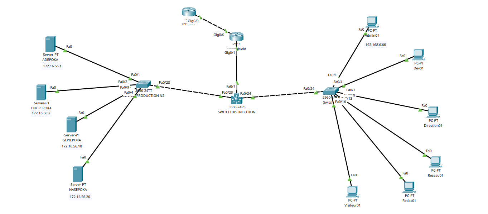
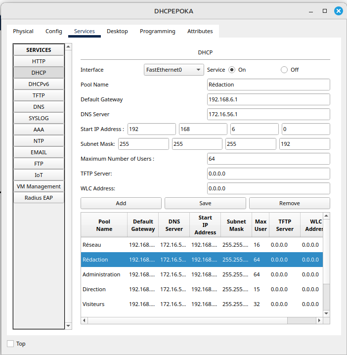
Configuration des VLANs sur le switch N2¶
VLANs :
- VLAN 11 : Administration
- VLAN 21 : Développement
- VLAN 31 : Réseau
- VLAN 41 : Réseau
- VLAN 56 : Serveurs
- VLAN 61 : Rédaction
- VLAN 71 : Visiteurs
SWITCH N2¶
version 15.0
no service timestamps log datetime msec
no service timestamps debug datetime msec
no service password-encryption
hostname N2_AP
spanning-tree mode pvst
spanning-tree extend system-id
interface FastEthernet0/1
switchport access vlan 11
switchport mode access
interface FastEthernet0/2
switchport access vlan 11
switchport mode access
interface FastEthernet0/3
switchport access vlan 11
switchport mode access
interface FastEthernet0/4
switchport access vlan 21
switchport mode access
...
interface FastEthernet0/24
switchport trunk allowed vlan 11,21,31,41,56,61,71
switchport mode trunk
Configuration des VLANs sur le switch N3¶
VLANs :
- VLAN 11 : Administration
- VLAN 21 : Développement
- VLAN 31 : Réseau
- VLAN 41 : Réseau
- VLAN 56 : Serveurs
- VLAN 57 : LAN
- VLAN 61 : Rédaction
- VLAN 71 : Visiteurs
SWITCH N3¶
version 12.2(37)SE1
hostname N3_AP
ip routing
no ip domain-lookup
spanning-tree mode pvst
interface FastEthernet0/1
switchport access vlan 57
switchport mode access
...
interface Vlan11
ip address 192.168.6.65 255.255.255.192
interface Vlan21
ip address 192.168.6.161 255.255.255.224
interface Vlan31
ip address 192.168.6.193 255.255.255.224
interface Vlan41
ip address 192.168.6.225 255.255.255.240
interface Vlan56
ip address 172.16.56.253 255.255.255.0
interface Vlan61
ip address 192.168.6.1 255.255.255.192
interface Vlan71
ip address 192.168.6.129 255.255.255.224
ip route 0.0.0.0 0.0.0.0 192.168.66.254
Configuration des VLANs sur le switch N2 Production¶
VLAN : 56 (Serveurs)
SWITCH N2 Production¶
version 15.0
hostname Switch
spanning-tree mode pvst
spanning-tree extend system-id
interface FastEthernet0/1
switchport access vlan 56
switchport mode access
...
interface FastEthernet0/23
switchport access vlan 56
switchport mode access
Routeur Stormshield¶
version 15.1
hostname Router
ip cef
no ipv6 cef
interface GigabitEthernet0/0
ip address 172.16.29.6 255.255.252.0
ip nat outside
interface GigabitEthernet0/1
ip address 192.168.66.254 255.255.255.240
ip nat inside
ip nat inside source list 1 interface GigabitEthernet0/1 overload
ip classless
ip route 0.0.0.0 0.0.0.0 172.16.31.254
ip route 192.168.6.0 255.255.255.0 192.168.66.253
access-list 1 permit 192.0.0.0 0.255.255.255
access-list 1 permit 172.0.0.0 0.0.255.255
Routeur Internet¶
version 15.1
hostname Router
ip cef
no ipv6 cef
interface GigabitEthernet0/0
ip address 172.16.31.254 255.255.252.0
interface GigabitEthernet0/1
no ip address
ip classless
Pare-feu Stormshield – Layer 3 et NAT¶
Table de routage¶
| Destination | Masque | Passerelle | Interface | Type |
|---|---|---|---|---|
| 172.16.28.0 | /22 | 172.16.29.6 | – | C |
| 192.168.66.240 | /28 | 192.168.66.254 | – | C |
| 0.0.0.0 | /0 | 172.16.31.254 | 172.16.29.6 | S |
| 192.168.6.0 | /24 | 192.168.66.253 | 192.168.66.254 | S |
| 172.16.56.0 | /24 | 192.168.66.253 | 192.168.66.254 | S |
Routage NAT¶
| Avant translation | Après translation |
|---|---|
| 192.168.6.0/24 → * | 172.16.29.6 |
| 172.16.56.0/24 → * | 172.16.29.6 |
Pare-feu Virtuel¶
Configuration de base¶
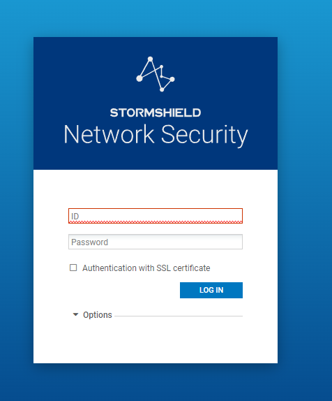
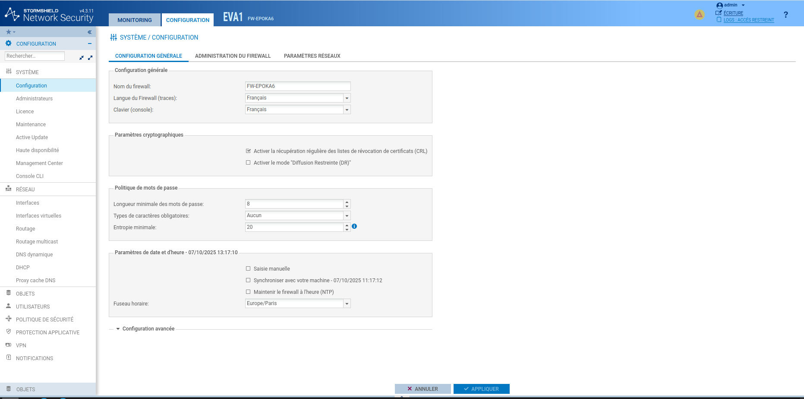
Configuration des interfaces¶
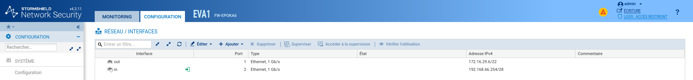
Configuration du NAT / PAT¶
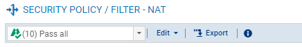
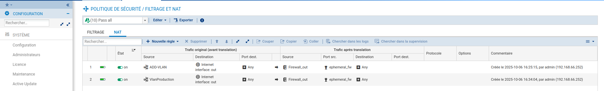
Configuration du routage¶
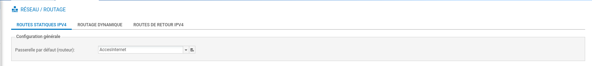
ip route 172.16.31.254
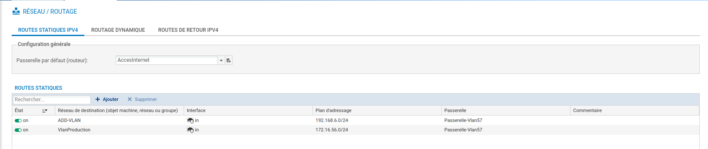
Validation de l’architecture¶
Tests effectués :
- Ce mettre dans un des vlans (ex: Administration) ✅
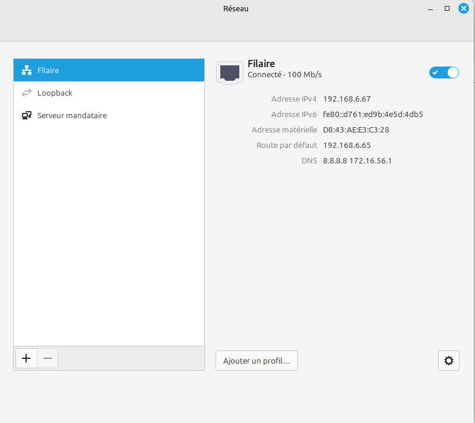
- Ping du pare-feu depuis le VLAN Administration ✅
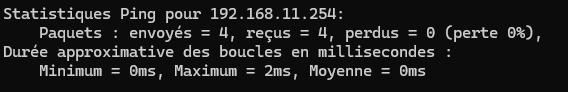
- Accès à la page d'administration du pare-feu ✅
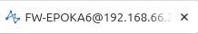
- Ping des serveurs VLAN 56 ✅
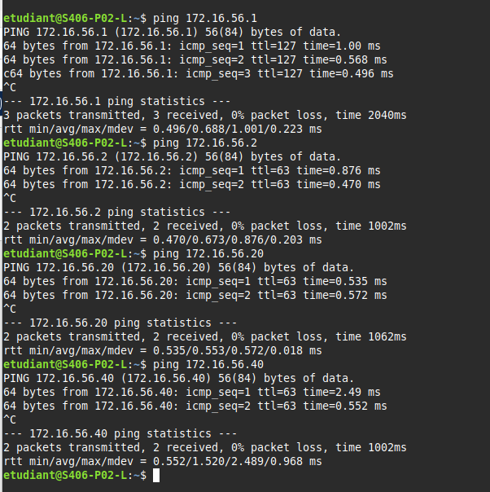
- Ping du DNS Google (connectivité Internet) ✅
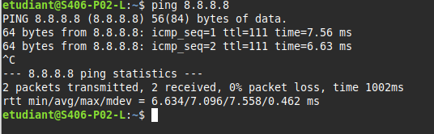